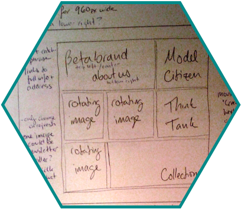
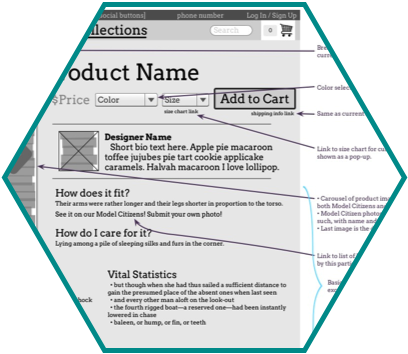
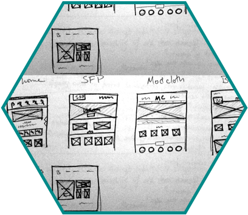
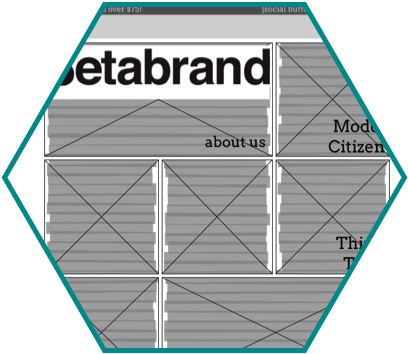

betabrand


Betabrand is an online clothing community based in San Francisco, California. They design, manufacture, and release new products in small batches frequently. Unlike typical e-commerce retailers, Betabrand also offers a highly-curated inventory of fan designed and crowdfunded clothing. We were lucky enough to be able to talk to the product manager about their current struggles, as well as get detailed information about what they were looking to highlight on their site.
Through their website, betabrand want to showcase their range of products while maintaining a quirky, fun, and creative brand image.
Clickable prototype of a redesigned and simplified website, along with an integrated "outfit" feature (requested).
Created Information Architecture, user flow diagrams, sketches, paper prototype, and wireframes based on user research and testing.
Omnigraffle,
Invision,
Google Slides.
For this solo project, we were provided with a problem statement, personas and user flows. It required user research and testing, sketches, a paper prototype, wireframes, and a clickable prototype. I also synthesized user feedback, and from that created new Information Architecture and a site map.

The first step was to figure out where betabrand fell in the marketplace. I quickly discovered that they don't have any direct competition - there are other sites doing crowdsourcing of various types, and there are other local SF clothing retailers, but no one is doing both. This is both fantastic (because they can do whatever they want without needing to worry about losing marketshare to anyone) but also difficult (because there is no standard to unify the experience).
After hearing from their product manager about some of the internal pain points, the next step was to get user feedback about the current site. I did several cardsorting sessions with friends, as well as had them walk me through the user journeys we were given on the current site.
All of this user and market research pointed to two very specific ways to improve the site : simplifiying the Information Architecture, and providing more information about their crowdsourcing/funding section without too many clicks.

All of the products on the current site are shown on the home page. Every single product, in every single color. The navigation drop-downs are long and confusing. A lot of the product categories seem to have been invented for a single product instead of included within another. The search bar does not return accurate results.
I first attempted to reorganize the current sections, but quickly realized that I was jumping ahead. I went back to the user journeys, and the feedback I had gotten from testers. This allowed me to sketch a simple flow for each, which was critical to understanding the way users would expect a site to be structured. I was then able to extrapolate it into a full site map that allowed for future expansion and addition of products.

Once I knew the underlying architecture of the site, I started sketching pages. At each step of the way, I got feedback which was integrated into the next version for further testing. It quickly became apparently that there are several different styles of online shopping that needed to be integrated. Allowing for everything everywhere leads to the overwhelming UI on the current betabrand site, so I pieced together different aspects of the experiences and tested them together to find something that worked for the greatest number of people.
Once I had something that worked for most people, I moved on to high-fidelity wireframes.

Clickable version available in Invision.